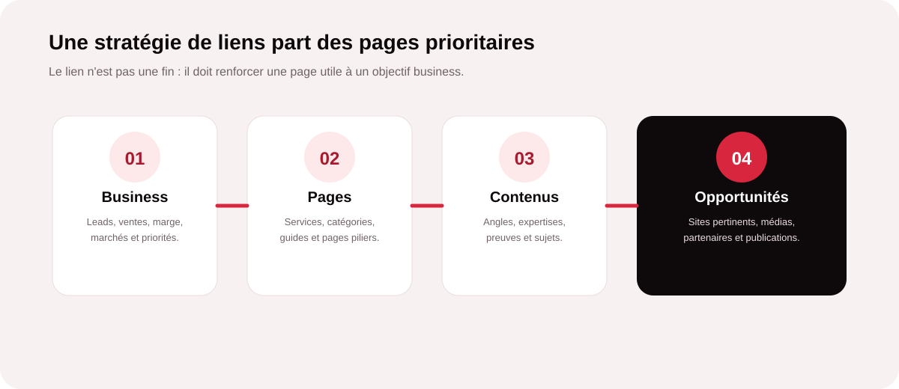
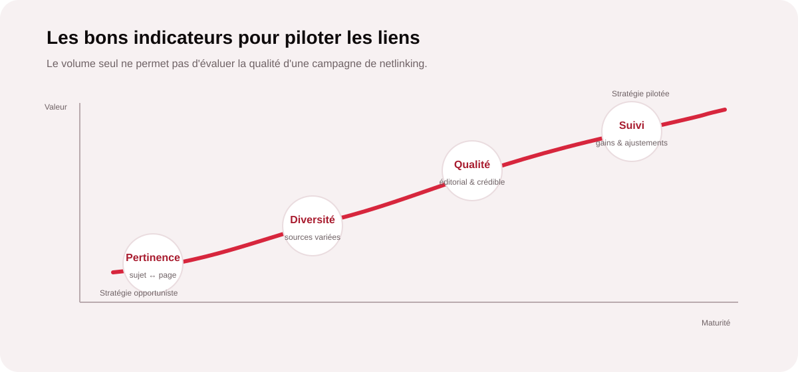

Pourquoi le netlinking doit partir de vos priorités business
Une stratégie de liens efficace ne commence pas par la recherche de sites qui acceptent de publier un article. Elle commence par une question plus importante : quelles pages souhaitez-vous réellement faire progresser, et pourquoi ? Une page service stratégique, une catégorie e-commerce ou un contenu expert peuvent avoir des enjeux très différents en matière de visibilité et de conversion.
Le rôle du netlinking est alors de renforcer progressivement l’autorité et la pertinence des pages qui comptent le plus pour l’entreprise. Cela permet d’éviter une campagne dispersée où les liens sont obtenus sans relation claire avec les objectifs commerciaux.

1. Identifier les pages qui méritent des liens
Toutes les pages d’un site n’ont pas besoin du même niveau de soutien externe. Commencez par sélectionner les URL qui contribuent directement à vos objectifs : pages de services, catégories, offres, pages locales ou contenus capables de générer une demande qualifiée.
Pour chaque page, il est utile de préciser son rôle, son mot-clé ou sujet principal, son intention de recherche, son niveau actuel de visibilité et sa valeur business. Cette matrice permet ensuite de déterminer où concentrer les efforts de netlinking.
| Type de page | Objectif | Approche de liens |
|---|---|---|
| Page service | Générer des demandes commerciales. | Liens pertinents depuis des contenus experts et sectoriels. |
| Catégorie | Développer une visibilité produit ou marché. | Sources thématiques, guides, comparatifs et partenaires. |
| Page locale | Renforcer une présence géographique. | Écosystème local, médias, acteurs et publications régionales. |
| Guide expert | Gagner en autorité sur un sujet. | Mentions éditoriales, citations et ressources spécialisées. |
2. Définir une logique d’ancrage naturelle
Le texte d’ancrage doit aider le lecteur à comprendre ce qu’il trouvera en cliquant. Une stratégie saine évite de répéter mécaniquement une même expression commerciale. Les ancres peuvent être constituées du nom de marque, d’une URL, d’une formulation descriptive ou d’un terme pertinent selon le contexte éditorial.
L’objectif n’est pas de construire une distribution artificielle, mais de disposer d’un profil de liens qui ressemble à ce qu’un écosystème éditorial réel pourrait produire. La pertinence du contexte prime sur la répétition d’une formule.
3. Rechercher des opportunités vraiment pertinentes
Une base de sites potentiels n’a de valeur que si elle est qualifiée. Pour chaque opportunité, il faut regarder le sujet traité, l’audience, la cohérence éditoriale, la qualité des contenus, la visibilité du site et la place du lien dans l’article. Un site simplement capable de publier n’est pas forcément un bon partenaire.
- Pertinence thématique : le site traite-t-il de sujets proches de votre expertise ?
- Pertinence d’audience : ses lecteurs correspondent-ils à vos marchés ?
- Qualité éditoriale : les publications sont-elles utiles, structurées et crédibles ?
- Diversité : la campagne évite-t-elle une dépendance à un seul type de source ?
- Contexte du lien : le lien apporte-t-il une vraie valeur au lecteur ?
Vos pages prioritaires sont-elles correctement soutenues ?
MinoSeo peut auditer vos pages stratégiques, votre profil de liens et vos opportunités de netlinking pour définir un plan d’action réellement aligné sur vos objectifs SEO.
Demander un audit netlinking4. Relier chaque lien à un contenu utile
Un lien est plus naturel lorsqu’il est intégré dans un contenu qui traite réellement du sujet. C’est pourquoi une campagne de netlinking doit être pensée avec une stratégie éditoriale : guides, analyses, dossiers sectoriels, comparatifs, études de cas ou contenus pratiques peuvent créer des contextes cohérents pour les liens.
Cette approche présente un double avantage. Elle facilite l’obtention de publications utiles et elle développe en parallèle un réseau de contenus capables de renforcer la compréhension de votre expertise. Le lien devient alors une partie d’un dispositif éditorial, et non un élément isolé.
5. Construire une progression plutôt qu’un pic de liens
La cohérence se joue aussi dans le temps. Une campagne efficace peut combiner différentes catégories de sources et répartir les acquisitions selon les priorités du site. L’objectif est de construire progressivement un profil plus riche, sans chercher à produire un volume arbitraire.
Une bonne feuille de route peut par exemple prévoir d’abord les pages commerciales prioritaires, puis les contenus piliers, puis des pages secondaires ou locales. Le calendrier doit rester adaptable aux opportunités éditoriales et aux performances observées.
6. Quels indicateurs suivre pour piloter les liens ?

Le nombre de backlinks acquis est un indicateur de production, mais il ne suffit pas à évaluer la stratégie. Il est pertinent de suivre notamment la diversité des domaines référents, la pertinence des pages sources, la répartition des liens entre les pages prioritaires, l’évolution de la visibilité organique et, lorsque les données sont disponibles, les conversions issues des pages soutenues.
Le bon pilotage consiste surtout à comparer les résultats aux objectifs initiaux. Si une page stratégique progresse et génère davantage de trafic qualifié, la campagne apporte une valeur mesurable. Si les liens se multiplient sans effet sur les priorités, il faut revoir la sélection des sources, les contenus ou les pages ciblées.
Les erreurs fréquentes à éviter
- Acquérir des liens sans définir les pages prioritaires.
- Privilégier systématiquement le volume au contexte éditorial.
- Utiliser les mêmes ancres commerciales de manière répétitive.
- Négliger les contenus vers lesquels les liens pointent.
- Évaluer une campagne uniquement avec le nombre de backlinks obtenus.
L’approche netlinking de MinoSeo
Depuis plus de 15 ans, MinoSeo accompagne les entreprises dans leurs problématiques de SEO et de création de liens retour. Notre approche consiste à relier le travail de netlinking aux priorités réelles du site : pages à potentiel, sujets stratégiques, marchés ciblés et objectifs de visibilité.
Nous pouvons intervenir sur l’audit du profil de liens, la sélection d’opportunités, la stratégie d’ancres, la création des contenus nécessaires et le suivi des campagnes. L’objectif est de construire un dispositif cohérent, progressif et pilotable plutôt qu’une simple accumulation de backlinks.
Construisons votre plan de liens
Partagez vos objectifs SEO et vos pages prioritaires. MinoSeo vous aide à définir une stratégie de netlinking adaptée à votre marché, à votre contenu et à votre niveau d’autorité.
Parler à un expert SEOUne stratégie de liens doit servir une stratégie SEO
Le netlinking devient réellement efficace lorsqu’il est intégré à une vision plus large : objectifs business → pages prioritaires → contenus → opportunités → acquisition → mesure. Cette chaîne permet de mieux utiliser les ressources disponibles et de concentrer les efforts sur les pages capables de créer de la valeur.
La qualité d’une campagne ne se résume donc pas à son volume. Elle se mesure à la cohérence entre les sources, les contenus, les pages ciblées et les objectifs. Avec son expérience de plus de 15 ans en SEO et netlinking, MinoSeo peut vous accompagner dans la construction et le pilotage de cette stratégie.
Donnez à vos pages prioritaires les liens qu’elles méritent
Identifiez les meilleures opportunités de netlinking et construisez une campagne cohérente avec vos objectifs de visibilité et de croissance.
Demander une stratégie netlinking